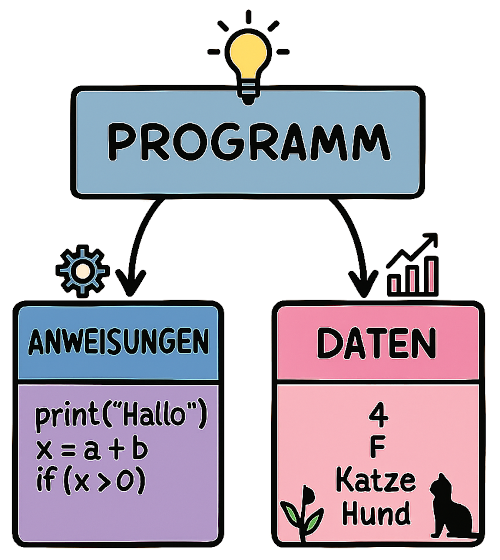

Einstieg in die Programmierung mit C und Python
Programme – Struktur und Bestandteile
Wie kommt man als Einsteiger von einer Aufgabe zu einem funktionierenden Computerprogramm?
Am Anfang steht immer ein Ziel – zum Beispiel eine Zahl zu berechnen, Daten zu speichern oder
Informationen anzuzeigen.
Dieses Ziel muss in eindeutige, logisch geordnete Anweisungen übersetzt werden, die der Computer
verstehen kann.
In diesem Kapitel wird erläutert, wie aus einer Idee eine klare, ausführbare Folge von Anweisungen entsteht.
Grundidee eines Programms
Ein Computerprogramm ist eine genau festgelegte Abfolge von Anweisungen, die von einem Computer
schrittweise ausgeführt werden.
Damit ein Computer diese Anweisungen verstehen kann, müssen sie in einer Programmiersprache geschrieben
werden, die anschließend in Maschinensprache übersetzt wird.
Ein Programm besteht im Wesentlichen aus zwei grundlegenden Bausteinen:

Anweisungen
Anweisungen (Befehle) legen fest, welche Aktionen der Computer ausführen soll.
Eigenschaften von Anweisungen:
- Werden in einer Programmiersprache formuliert (z. B. C, Python).
- Folgen einer logischen Reihenfolge (Ablaufsteuerung).
- Können sich wiederholen (Schleifen) oder Entscheidungen treffen (Bedingungen).
Beispiele:
- „Addiere zwei Zahlen“
- „Zeige den Text ‘Hallo Welt’ auf dem Bildschirm an“
- „Prüfe, ob eine Zahl größer als 10 ist“
Daten
Daten sind die Informationen, auf die sich die Anweisungen beziehen und mit denen sie arbeiten.
Eigenschaften von Daten:
- Können Zahlen, Texte, Bilder oder andere Informationsarten sein.
- Werden im Speicher des Computers abgelegt (temporär im Arbeitsspeicher oder dauerhaft auf einer Festplatte).
- Können vom Benutzer eingegeben, aus Dateien gelesen oder vom Programm selbst erzeugt werden.
Beispiele:
- Die Zahlen 5 und 3, die addiert werden sollen.
- Ein Text wie „Herzlich willkommen“, der auf dem Bildschirm erscheinen soll.
- Messwerte eines Sensors, die in einem Programm verarbeitet werden.
Anweisungen – das Fundament eines Programms
Anweisungen (Befehle) sind die elementaren Arbeitsschritte, die der
Computer ausführt.
Damit sie verstanden und korrekt umgesetzt werden, müssen sie exakt formuliert sein – in einer
Programmiersprache mit festgelegten Regeln. Diese Regeln nennt man Syntax.
Warum ist Syntax so wichtig?
Schon kleine Abweichungen, z. B. ein fehlendes Semikolon oder eine falsch eingerückte Zeile, können dazu
führen, dass ein Programm nicht funktioniert oder gar nicht erst gestartet wird.
Syntaxfehler sind vergleichbar mit Rechtschreibfehlern in einer formalen
Sprache – sie können den Sinn vollständig verändern oder die Verständlichkeit zerstören.
Gemeinsamkeiten zwischen C und Python
Eindeutigkeit:
In beiden Sprachen muss jede Anweisung klar formuliert und nach den jeweiligen Syntaxregeln geschrieben werden.
Ablaufsteuerung:
Beide unterstützen grundlegende Kontrollstrukturen wie Bedingungen (if-Anweisungen), Schleifen (for, while) und
Funktionsaufrufe.
Logischer Aufbau:
Unabhängig von der Sprache folgt der Ablauf den gleichen Denkstrukturen – nur die Schreibweise unterscheidet sich.
Unterschiede in der Syntax
|
Aspekt |
C |
Python |
|
Befehlsende |
Jede Anweisung endet mit Semikolon ; . |
Der Befehl endet mit dem Zeilenende. |
|
Blockstruktur |
Codeblöcke werden mit geschweiften Klammern {} begrenzt. |
Codeblöcke werden durch Einrückungen definiert. |
|
Variablendeklaration |
Variablen müssen vor der Verwendung mit Typ angegeben werden (int, float, char). |
Variablen werden beim Zuweisen automatisch angelegt, der Typ wird automatisch bestimmt. |
|
Funktionen |
Funktionskopf enthält Rückgabetyp (int main() ), Parameter und geschweifte Klammern. |
Funktion wird mit def eingeleitet, Parameter in Klammern, Block durch Einrückung. |
Zusammenfassung
Auch wenn sich C und Python in ihrer Schreibweise (Syntax) deutlich unterscheiden, beruhen beide auf denselben logischen Prinzipien:
- Anweisungen müssen eindeutig formuliert sein.
- Der Ablauf wird mit Kontrollstrukturen wie Bedingungen und Schleifen gesteuert.
- Aufgaben lassen sich in Funktionen gliedern, um den Code übersichtlich und wiederverwendbar zu gestalten.
Wer die grundlegende Denkweise hinter den Anweisungen verstanden hat, kann dieses Wissen leicht auf verschiedene Programmiersprachen übertragen.
- Inhaltlich lässt sich derselbe Algorithmus in C, Python oder einer anderen Sprache umsetzen.
- Formell muss er jedoch an die jeweiligen Syntax-Vorgaben angepasst werden.
Wer die gemeinsame Logik erkennt und die unterschiedliche Syntax beherrscht, kann in mehreren Sprachen sicher programmieren.
Daten
Anweisungen beschreiben was ein Computer tun soll – Daten liefern das Womit. Ohne Daten gäbe es für ein Programm nichts zu verarbeiten.
Bedeutung von Daten
Daten sind Informationen, die ein Programm speichert, verarbeitet oder ausgibt. Sie können fest im Programm hinterlegt (konstant) oder zur Laufzeit eingegeben werden. Daten werden im Speicher des Computers abgelegt:
-
flüchtig (
volatile) im Arbeitsspeicher (RAM) – sie gehen beim Ausschalten verloren. -
dauerhaft (
non volatile) auf einer Festplatte, SSD oder einem anderen Speichermedium.
Datentypen
In Programmiersprachen werden Daten je nach Art in Datentypen eingeteilt. Dies ermöglicht dem Computer, Speicherplatz effizient zu nutzen und die richtigen Operationen auszuführen.
|
Datentyp |
Beispiele |
Verwendung |
|---|---|---|
|
Ganzzahlen |
0, 42, -5 |
Zähler, Indizes, IDs |
|
Gleitkommazahlen |
3.14, -0.01 |
Messwerte, Berechnungen mit Dezimalstellen |
|
Zeichen |
'A', 'z', '7' |
Einzelne Buchstaben oder Symbole |
|
Zeichenketten |
"Hallo", "abc123" |
Textverarbeitung, Nachrichten |
|
Wahrheitswerte |
true, false |
Entscheidungen, Bedingungen |
Unterschiede zwischen C und Python bei Daten
|
Aspekt |
C |
Python |
|---|---|---|
|
Variablendeklaration |
Datentyp muss vorher angegeben werden ( |
Datentyp wird automatisch erkannt ( |
|
Typensicherheit |
Streng – Variablentyp ist fest und kann nicht geändert werden. |
Flexibel – Variablentyp kann sich zur Laufzeit ändern. |
|
Speicherverwaltung |
Teilweise manuell (z. B. bei Arrays, dynamischem Speicher). |
Automatisch (Garbage Collection). |
|
Standard-Datentypen |
Einfach, wenige Grundtypen: Komplexere Strukturen müssen definiert werden. |
Viele eingebaute Datentypen (Listen, Dictionaries, Sets). |
Beispiel:
Summe zweier Zahlen in C.
#include <stdio.h> int main() { int a = 5; int b = 3; int summe = a + b; printf("Summe: %d\n", summe); return 0; }
Beispiel:
Summe zweier Zahlen in Python.
a = 5 b = 3 summe = a + b print("Summe:", summe)
Zusammenfassung: Daten als Arbeitsmaterial
- C erfordert eine präzise Vorabdefinition der Datentypen, wodurch Programme oft schneller und ressourcenschonender sind.
- Python ist hier flexibler, was besonders für Einsteiger den Umgang erleichtert, jedoch in bestimmten Fällen weniger effizient sein kann. Manchmal ist diese flexible Definition auch eine Fehlerquelle in Python Skripten.
Der Programmablaufplan – Programme visuell darstellen
Bevor der eigentliche Quellcode entsteht, ist es oft hilfreich, den Ablauf eines Programms visuell zu planen.
Dafür werden Programmablaufpläne (PAP) verwendet.
Ein Programmablaufplan zeigt in einer grafischen Form:
- welche Schritte das Programm ausführt
- in welcher Reihenfolge sie erfolgen
- an welchen Stellen Entscheidungen getroffen werden
Warum ein Programmablaufplan nützlich ist
- Planung vor dem Programmieren: Hilft, den Ablauf zu strukturieren, bevor Quellcode entsteht.
- Verständlichkeit: Auch für Personen ohne Programmierkenntnisse nachvollziehbar.
- Fehlererkennung: Logische Fehler lassen sich früh erkennen, bevor sie im Code Probleme verursachen.
- Kommunikation: Erleichtert die Zusammenarbeit in Teams, da er eine neutrale visuelle Sprache nutzt.
Standard-Symbole im PAP
Eine Form für die visuelle Darstellung eines Programms ist der Programmablaufplan (PAP nach DIN 66001).
Ein PAP eignet sich nicht nur zur Darstellung von Programmen, sondern auch zur Darstellung von
Prozessen. Die Darstellung ist in der DIN 66001 genormt. Jede Anweisung erhält einen eigenen
Strukturblock, dessen Aussehen sich nach der Art der Anweisung richtet.
Start / Stopp - Block
Der Beginn bzw. das Ende des Programms wird durch einen Start- bzw. Stopp-Block gekennzeichnet.
Start- / Stopp-Block:

Anweisungen
Jede Anweisung in einem Programm erhält ihren eigenen Anweisungs-Block.
Anweisungs-Block:

Ein- Ausgabe
Für die Kommunikation mit dem Benutzer gibt es den Ein- bzw. Ausgabe-Block.
Ein- / Ausgabe-Block:

Linearer Ablauf von Anweisungen (Sequenz)
Anweisungen, die nacheinander durchlaufen werden mit Pfeilen verbunden, die den Fluss der Anweisungen wiedergeben.
Sequenz:

Bedingte Verzweigungen (if / else)
Bedingte Verzweigung:

Schleifen
Schleifen werden im PAP durch bedingte Verzweigungen gebildet. Einen speziellen Block für Schleifen gibt es im PAP nicht.
Schleifen: